答 案
第一章 数字和符号
001 D。横行竖列中数字排列相同。
002
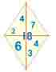
003 甲：24，乙：28。每一个框内数字之和均为99。
004 60。关于问号所在点对称的两个数字之积均为60。
005 答案不唯一，下面提供一种：
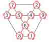
006 如图。
007 C。表上数字相加之和均为18。
008 C。时针所指的数字是分针所指的两倍。
009 123－45－67＋89=100
010 66，36，54，45。
011 草莓=5，苹果=2，香蕉=4，=1，=3，因此，=11，=11。
012 1：15。题中是将表上的时刻转化为数值，
如：9：00→900；6：00→600，900+600=1500等。
013 （1）27×6÷3＋81－90＝45
（2）290÷145×6＋3－7＝8
（3）6×7＋205÷41－9＝38
014 （1＋2）÷3＝1
12÷3÷4＝1
[（1＋2）×3－4]÷5＝1
（1×2＋3－4＋5）÷6＝1
{[（1＋2）×3－4]÷5＋6}÷7＝1
[（1＋2）÷3×4＋5＋6－7]÷8＝1
（1×2＋3＋4－5＋6＋7－8）÷9＝1
015 一个加数十位上的数字“5”写成“3”，这个错误使加数比原来少了20；而另一个加数百位上的数字“6”写成“9”，就等于把600变成900，使另一个加数比原来大了300。由于加数的变化，造成两数的和的变化，我们可以写成等式：3217－300＋20=2937，即正确答案是2937。
016 小青写的一位数是1～9，一共是9个数字；两位数是10～99，一共是90个数，90×2＝180个数字；三位数是100～279，共180个数，一共是180×3＝540个数字。所以从1到279共有：9＋180＋540＝729个数字。
017 草花4。图中横行、纵行、对角线的三个数相加，和均为15，且黑桃、方片、草花三种花色交替出现。
018 黑桃10。每列扑克牌数上的点数之和均为20，且每行的四张牌花色各异。
019 红桃5。每一竖列中，垂直相对的牌加起来都等于9，而花色的变化顺序是DBACEGIHF。
020
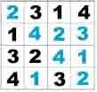
022
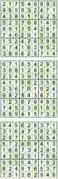
023
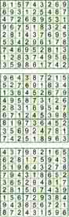
024 在时间上，7点钟再过8个小时是3点钟。
025 0×7÷5＋9－1＝4×3÷6＋8－2
026
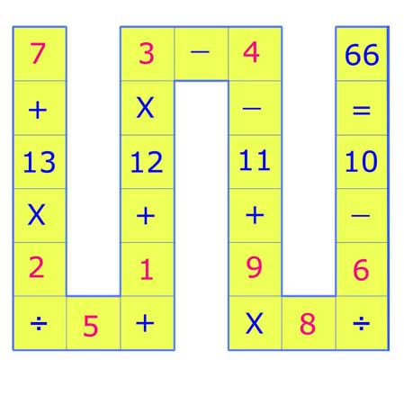
027
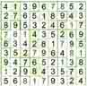
028
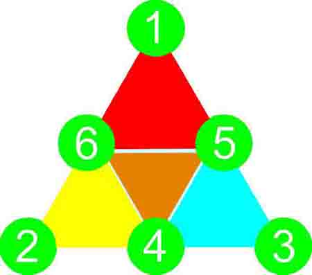
029 圆周率π。
030
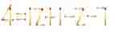
031
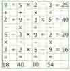
032
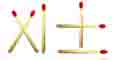
033 将数字8中间的火柴移到右侧6的一边，使6变成8。如图所示：

034 如图。
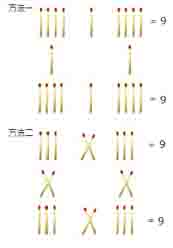
035
（1）
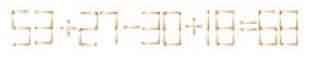
（2） 可以改成罗马数字表示的等式：
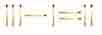
（3） 可以改成罗马数字表示的等式：
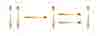
036
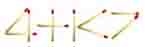
037
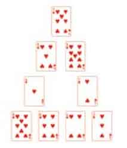
038
（1） （6÷3＋6）×3=24
（2） 8÷（9－7）×6=24
（3） （10＋2）×（1＋1）=24
（4） （10－8）×7＋10=24
（解法不唯一，合理即可）
039
（1） 6÷2×5＋9＝24
（2） （9＋10）＋（10÷2）＝24
（3） （9－7）×8＋8＝24
（4） 3×6＋（8－2）＝24
（5） （1＋1）×9＋6＝24
（6） 2×9＋（10－4）＝24
（解法不唯一，合理即可）
040
（1） 5×5－9÷9＝24
（2） 5×5－（10－9）＝24
（3） （6＋7）×2－2＝24
（4） 3×9－（8－5）＝24
（5） 4×7－2×2＝24
（6） （10－7）×10－6＝24
（7） 8÷2×8－8＝24
（8） 5×7－（2＋9）＝24
（9） 5×8－2×8＝24
（10） 6×9－5×6＝24
（11） 8×8－5×8＝24
（12） 8×9－6×8＝24
（解法不唯一，合理即可）
041 （1） 3（2） 8
042 （1） 3（2） 8
043 花心处的数字不是唯一的，3、6、9都可以。
044 可组成一个正确的等式：72=49。
045 （1）B。1～9的九个整数中，任何数只有乘以1时，才能等于它本身。
（2） E。
（3） E。
（4） D。
046 （1）B。很显然，1×5=5。
（2）E。选项中，只有0的4倍等于它自身。
（3）CE。0～9中的十个整数中，只有0和5的3倍的个位数字可能是它本身。等式结果的十位数是7，所以排除0，便可知答案。
047 狼。
048 “茶”“可”“以”“清”“心”“也”六个字，分别对应数字1、4、2、8、5、7。
“茶”位于数字的首位，那么“茶”≠0，也不可能大于2，否则最后一个等式乘以6就会有进位，而题中已知最后一个等式没有产生进位。故“茶”＝1。再看第二个等式，乘以3尾数为1，一眼便可以看出“也”＝7。接下来可知，2×7＝14，则“可”＝4，剩下几个数字很快便可以推出来了。
也可以用另一种思路：看出“茶”＝1之后，我们可以假设“茶可以清心也”为，由第二个等式可知，＝，解得＝42857，则“茶、可、以、清、心、也”分别是1、4、2、8、5、7。其实就是循环数演变出来的一道题目，如果你对循环小数比较熟悉的话，很轻易就可以看出答案。从每个等式积的变化，我们可看出“茶、可、以、清、心、也”所代表的6位数有规律的循环，联想循环小数中1/7＝0.142857，2/7＝0.285714，3/7＝0.428571，4/7＝0.571428，5/7＝0.714285，6/7＝0.857142，进一步推理，就可以解得。
049 由于是两个三位数相加，其和最大值可能是1998，因此“真”字表示数字1，“巧”字可能为9，也可能是8。如果“巧”代表数字8，那么从百位数字上分析，“巧”＋“真”的个位数字只可能是0，并且十位上两个数字相加必须有进位。868＋108＝1086，得到一个不成立的算式。所以“巧”字不能代表数字8，只能代表数字9。正确答案为：989＋109＝1098。
050 1435毫米。
051
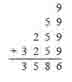
052 实际上是祖孙三代：爷爷、父亲、儿子。爷爷给了父亲150元，父亲给了他的儿子100元。
053 88×88=7744。
第二章 几何之美
054
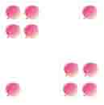
055 如图。
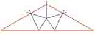
056
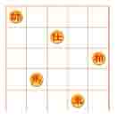
057
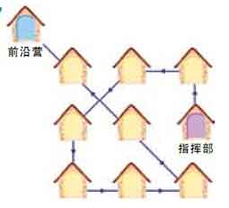
058 四边形。这里有两个系统的图形互相交叉地排列着。第一系统的图形的排列先是一条线的图形，跳过一个图形是两条线的图形，再跳过一个图形是三条线的图形，所以接着再跳过一个图形应该是四条线的图形。第二系统的排列是从第二个图形五边形开始的，隔一个是四条线的图形，再隔一个是三条线的图形。
059 B属于甲组，ACD属于乙组。甲组的图形都是由连贯的线构成，乙组的图形是由两条以上不连贯的线构成。
060 只要把四艘战舰移至中央，如下图所示，这时舰队就可排出四列，而每列有四艘战舰。第五列就是最底下的那条水平线。
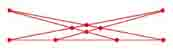
061
062
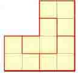
063
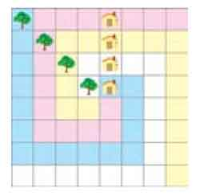
064
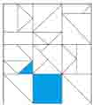
065
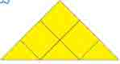
066 D。
067 B。观察横行前两行中图形的变化规律，可以发现：第一行为圆形、四角星、正方形；第二行为四角星、正方形、圆形，第三行的两个图形为正方形、圆形。由此，可以确定空格处为四角星，答案从B、E中选择。再观察图形中阴影处和空白处的规律，可知正确答案中无论阴影处还是空白处，都应该是两个，所以正确答案是B。
068 33个。
069 11个。
070 D。
071 27个。
072
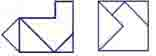
073
074
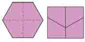
075
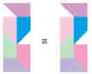
076
077 B。
078 A。
079 如图所示，用米尺量出AD或BC的长度就是所求正方体木块对角线的长度。
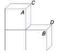
080 锯掉角的情况有4种，因此剩角的答案也有4种。如图所示：
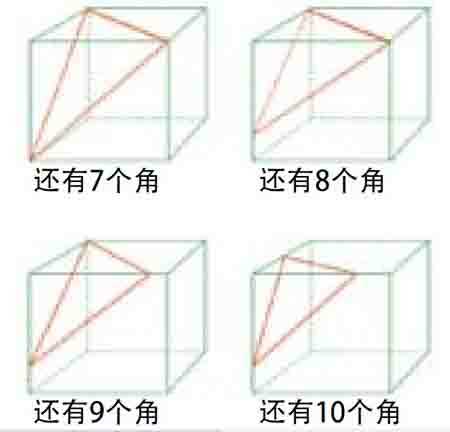
081
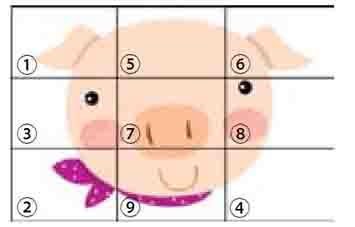
082 ②。
083 最短路径并不沿立方体的边。要算出最短路径，先把立方体展开成平面，如图所示。在瓢虫和蚜虫间画一条直线，即为最短路径。
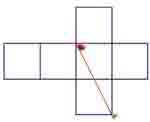
084 如图。
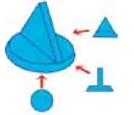
085 如图。
086
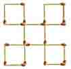
087
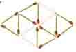
088
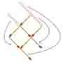
089
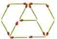
090
091
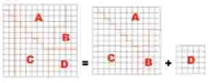
092 B。
第三章 有趣的算术
093 共卖七头小猪：红脸汉四头，黑脸汉两头，书生一头。
094 120枝。
095 慈善家自称施舍了50枚银元，分给10个人，如果每个人得到银元的枚数都不相同，最少的1枚（不能比这个数再小了），2枚，3枚……10枚。如此算来，要让十个人拿到枚数不同的银元，至少要1+2+3…+10=55（枚），50枚银元根本不够分的。
096 这是一串3个的肉丸，1串3个卖1元，2串6个卖2元，3串9个卖3元。吃2个也要付1串的钱，吃4个就得付2串的钱。
097 两只羊。
098 从刚相会到最近的再一次相会的天数，是三个女儿间隔回家天数的最小公倍数。3、4、5三个数的最小公倍数是：3×4×5＝60。
099 不必考虑水的速度，小船在距草帽3公里时回过头来追赶，船的时速为6公里，只需要半小时，即下午2时，小船就可以追到草帽。
100 梯子一共23级。
（7－3－2＋6＋3）×2＋1＝23
101 小芳从一岁到她现在年龄，从她现在年龄到宋老师现在年龄，以及宋老师从现在年龄到四十三岁，这中间的间隔是相等的，正好都等于他们俩人的年龄差，所以宋老师与小芳的年龄差是：（43－1）÷3＝14（岁）。可知小芳现在年龄为：1＋14＝15（岁），宋老师现在年龄为：15＋14＝29（岁）。
102 蜗牛每天实际上升1米，墙高12米。以此计算，9天就升高了9米，离顶端12－9＝3米。因为蜗牛在白天能升高3米，所以它在第十天的白天，完全可以直接爬到墙顶。
103 小老虎先回到出发点。小老虎跑完100米正好用了50跳，全程往返共用100跳。小狮子跳了33次，跑了99米，最后一米又要跳一次，往返总共跳了68次，等于小老虎跳102次。因此，当小狮子跳67次时，小老虎已先回到出发点。
104 大牧场主有七个儿子，五十六头奶牛。大儿子拿了两头奶牛，他老婆拿了六头；第二个儿子拿了三头奶牛，他老婆拿了五头；第三个儿子拿了四头奶牛，他老婆也拿了四头。这样依此类推，直到最后，第七个儿子拿到八头奶牛，但奶牛已经全部分光，他的老婆已经无牛可分。奥妙的是，现在每个家庭都分到八头牛，所以每家可以再分到一匹马。于是他们都分到了价值相等的牲口。
105 圆形跑道的直径同问题无关。当它们相遇时，兔子已走完全程的1/6，而在兔子行走的这段时间内，乌龟走了全程的17/24，因此乌龟的行走速度是兔子速度的17/4倍。兔子还有5/6的路程要跑，而乌龟只有1/6的路程了。所以兔子的速度必须至少是乌龟的5倍，也就是它自己在前一段行走速度的85/4倍才行。
106 丈夫用5星期可以把半桶白兰地喝完，这时妻子喝了桶的葡萄酒，剩下的桶葡萄酒两个人共需要5天才能喝完，所以一共需要40天。
107 23这个数，用2、3、8都不能整除，如果按规定的份额分马，就要分出小数点匹马来。但是，如果有24匹马不就好分了吗？聪明的阿凡提先是很高姿态地把自己的马贡献出来了，23＋1＝24，24×＝12，24×＝8，24×＝3，12＋8＋3＝23。然后，阿凡提再把自己的马牵走，牧场的三个人也各得其所了。
108 番茄酱+香肠=27便士；泡泡脆+烤蚕豆=14.5便士；烤蚕豆+番茄酱=15.5便士；蜂蜜+泡泡脆=28.5便士。以香肠价格为参考值，则番茄酱=27－香肠；蜂蜜=2.5+香肠；泡泡脆=26－香肠；烤蚕豆=香肠－11.5。通过计算，即可求得各种食品的单价。
已知“我”总共付出24便士，因此，买的是一罐烤蚕豆和一罐蜂蜜；或者一瓶番茄酱和一包泡泡脆；或者一罐烤蚕豆和一磅香肠。
| 价格/便士 | 番茄酱 | 香肠 | 蜂蜜 | 烤蚕豆 | 泡泡脆 |
| 解一 | 10.5 | 16.5 | 19 | 5 | 9.5 |
| 解二 | 12.5 | 14.5 | 17 | 3 | 11.5 |
| 解三 | 9.25 | 17.75 | 20.25 | 6.25 | 8.25 |
109 左右两页分别为第96页和第97页。
110 大青蛙捉了51只，小青蛙捉了21只。
111 这个题目类似中国古代算书中经典的“鸡兔同笼”问题，可以把一个大灯球下缀两个小灯球当成鸡，一个大灯球下缀四个小灯球当成兔。
三才灯的盏数：
（360×4－1200）÷（4－2）=240÷2=120
五星灯的盏数：
360－120=240
112 每个小猴子抬西瓜平均走了200米。
113 不能。兔子跑100米，猫跑90米，兔子又跑10米到达终点，猫又跑9米，还差1米才到达终点。
114 海伦原有的唱片数是个奇数，从成奇数的唱片中取一半再加上半张唱片，一定是个整数。因为海伦在把唱片送给乔以后只剩下了一张唱片，所以，可以推知在她把唱片送给乔之前，有3张唱片。3张的一半是1.5张，再加上半张，她送给乔的唱片一定是两张，自己还留下了一张完整的唱片。现在再回过头来计算，就不难算出她原来有7张唱片，送给珍妮的是4张。
115 这类问题就是中国古代算术中有名的“盈亏问题”。它的算术解法是：＝13（强盗数）
13×6＋5＝83（布匹数）
116 这个问题直接从文字上分析有一定难度，为了帮助我们理解题意，启发解题思路，可以根据题意，画出下面的线段图。
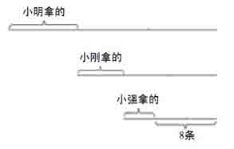
由于最后剩的8条是小强分的三份中的两份，所以小强拿走的鱼是8÷2＝4条；那么小刚拿走自己分的一份鱼后剩下的鱼是12条，这占小刚分的三份中的两份，所以小刚拿走的鱼是6条；同样可得知小明拿走的鱼是9条。所以打的鱼一共是4＋6＋9＋8＝27条。另一种解法：从小强第一天拿走的鱼是4条和第二天又拿了5条知道，每人平均拿了9条，所以打的鱼一共是9×3＝27条。
117 不能把黄瓜切断，但可以竖剖。把每根黄瓜剖成四条，四个人即得到了相同量的黄瓜。
118 每天怎样吃、最后剩多少都很清楚，可以用还原法，从后往前逆推。因为第四天吃去前一天所剩桃子的一半再加一个，刚好吃完（剩余0个），所以第三天吃剩的桃子个数是（0＋1）×2＝2。同理，第二天吃剩的桃子个数是（2＋1）×2＝6，第一天吃剩的桃子个数是（6＋1）×2＝14，第一天采回来的桃子个数是（14＋1）×2＝30。所以，小猴子从山上共采来30个桃子。
119 老妇人一共卖了17个鸡蛋。
此题用还原法来计算：
如果第三个人不买，此时蛋的个数：
（2＋0.5）×2＝5
如果第二人不买，此时蛋的个数：
（5－0.5）×2＝9
如果第一个人不买，此时蛋的个数：
（9－0.5）×2＝17
120 一瓶可乐1块钱。显然，阿聪没钱，阿傻有9角9分。
121 五十五岁。本游戏中，“六九”、“七八”均表示乘法。
122 工资每镑提高5便士要比拿加班工资强一些。为了计算简便起见，假定一个人每小时的工资是1镑，即每星期是44镑。如拿加班工资，他则按1小时1镑收入40小时的工资，即40镑，外加4个小时，每小时1.5镑即6镑，总计46镑。但如按工资每镑提高5便士则意味着44小时，每小时1.05镑，即46.20镑。
123 做这一类题目，别被几个数字弄糊涂了。你可以这样算：他开始买东西时是公平的，接着用9元换了100元，那么就等于骗了91元。或者这样算：他一共给了售货员（100+9）=109元，售货员共给了他[9（买的东西）+91+100]=200元，对比一下，骗的钱就算出来了，是91元。所以，他骗了商店91元。
124 44岁。如果注意到这位父亲年龄的一半和儿子年龄相等，就会很容易得出父亲年龄是儿子年龄的两倍这一结论。
125 这是可能的。这个人的生日是元月2日。他说话时是今年12月31日。这样一来。他去年元旦时是19岁，1月2日20岁，今年元月1日还是20岁，元月2日21岁，明年元月2日就是22岁了。
126 8个角上的小立方块三面涂色，6个中央的小立方块一面涂色，没有涂色超过三面的小立方块；因此，剩下的12个小立方块两面涂色。
127 要想使三枪得分的总和正好是50，唯一的办法是先打掉右边一摞的7号罐，然后打掉左边一摞的8号罐，最后打掉右边已经露在上面的9号罐。第一枪得7分，第二枪得8×2＝16分，第三枪得9×3＝27分。这样，共得50分。
128 8.75厘米。小虫从第I卷封面处蛀起，根本不必蛀第I卷的任何一页，只须蛀穿第II卷的7.5厘米，再蛀穿第III卷封底1.25厘米。把书放在书架上一看就清楚了。
129 可能，理由略。
130 应按这样的次序摆放麦袋：2，78，156，39，4。这样，两旁的两对相邻数的乘积都等于正中间的数，并且共计移动了五只麦袋。还有三种别的摆放麦袋的办法（4，39，156，78，2；3，58，174，29，6；6，29，174，58，3），但都需要移动七只麦袋。
131 三个人。九个阿拉伯人追上前面的人的时候，剩下的水只能够九个人喝四天了。与前面的人合在一起后，水只能够喝三天的。因此可知道被追上的人在三天中的水等于九个人一天喝的水，因此被追上的是三个人。
132 付出（9＋9＋9）元，得到（25＋2），完全平衡的。
133 二十两。许多人根据最后两笔交易，得出商人赚了十两银子的答案，是错误的。如果最后商人真的只挣到十两银子，他何必在七十两银子卖出而赚十两银子后，再费一道周折呢？现在让我们来把问题换个形式，看看这个账该怎么算。先用六十两银子买进一匹白马，又用七十两银子卖掉这匹白马，再用八十两银子买进一匹黑马，又用九十两银子卖掉这匹黑马。这样问题就清楚了，马贩子在交易中一共赚了二十两银子。
134 篮子中原有李子30个。
[（3×2＋1）×2+1]×2=30。
第四章 神奇的图形
135
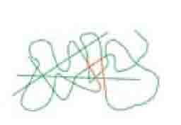
136 4。
137 对称是一种简单而有效的制作伪装的方法，遮住每个符号的左半边你就会有答案了。
138
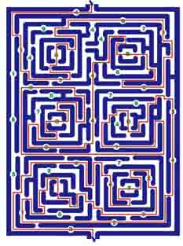
139
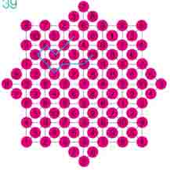
140 E。每行每列中都包含三种不同大小的星星，其中一个是黑色的，一个旁边没有月亮。
141
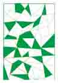
142 像图中那样画一条线就得到了五个水杯。
143 D。其他各项都是六条线。
144 可画出十二条线。
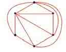
145 如图。
146 九个。
147 C。
148 四只大象围着一只橘子，奶牛在森林中，四只虫子在吃一个苹果，步枪，窗户后的一支蜡烛，一张猫的脸，一艘轮船。
149 第一行第二个，它是直边图形位于曲线图形以内，而其他的是曲线图形位于直边图形以内。
150 这是一个现实中不可能存在的几何体。
151 D。
152 D。在其他的图形中，如果分割正方形的直线是一面镜子的话，那么所显示出的镜像是正确的。
153 B。每行每列中都包含四种图形。
154 鲁班锁、九连环、七巧板、华容道。
155 C。在其他各组图案中，最大的图形和最小的图形是相同形状的。
156 D。图案照顺时针方向，每次转90度。
157 E。
158 F。第一个图案的彩色区加上第二个图案的彩色区，也就是彩色区的总和即为第三个图案。这条规律不仅适用于横向，也适用于纵向——这是做这种题的一个重要提示。
159 C。当黑箭头朝下时，必定以黑箭头带头。
160 B。每步的变化规律为：正方形变成圆形，三角形变成正方形，圆形变成三角形。
161 两部分，所有的三角形没有必要具有相同的形状。
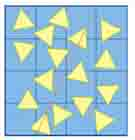
162 向左边开的，因为车门一般在车行驶方向的右侧，而图上看不到车门。
163 B。下一行的图案应是上一行图案水平翻转的影像，所以问号代表的图不会有变化。
164 A。其规律就是上下颠倒一下。
165 E。除E之外，所有竖线、横线交叉的格子中都只有一个点。
166 B。它是其他图的反面。
167 A。每个几何体是朝水平方向和垂直方向每次走四步。
168 E。下面两个图叠加后为上面的图案，依此类推。
169 D。两个相邻的图形相叠加，去掉相同的部分，就是它们正上方的图形。
170 C。这是一个考查观察、想象、逻辑推理能力的命题。由甲到乙，是一个沿对角线折叠的过程。
171 E。因为除了E之外，所有图中的小三角形的个数都是它们所围绕的图形边数的两倍。
172 C。从左向右数，黑格所在的方格依次是1格、3格、5格、7格和9格。
173 E是多余的。
174 西面。
175 一般会认为最近的路线是从大厅中央穿过去，可是，事实上并非如此。首先跑向通往房顶的楼梯，在房顶平台上斜穿过去，从离宝库最近的楼梯跑下去。然后，穿过通向宝库的迷宫就行了。这样，就可以以最短的距离，到达宝库。
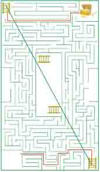
176 有可能，因为可以认为木块的组合如下图所示。
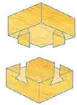
第五章 经典篇
177 D。第一个杯子和第四个杯子上写的话是矛盾的，所以必有一真，必有一假，因此第二、第三个杯子上的话是假话，从而可知第三个杯子中有巧克力。
178 C。“大”对应2，“小”对应1。
179 可能性为五分之一，从四个球中取出两个球有六种可能：1．红色/红色：2．红色1号/白色；3．红色1号/黑色：4．红色2号/白色；5．红色2号/黑色；6．黑色/白色。因为已知黑色白色这一对不可能已拿出，那么在剩下的五种可能中，取出红色/红色的可能性是五分之一。
180 实际上，两个探险家走了一个圆。人走路时，两脚之间有一定的距离，大约是0.1米，每一步的步长大约是0.7米，由于每个人两脚的力量不可能完全一致，因此迈出的步长也就不一样，若在白天要沿直线行走，我们会下意识地调整步长，保证两脚所走过的路程大致一样。当在夜间行走分辨不清方向时，就无法主动调整步长，走出若干步后两脚所走路程的长就会有一定差距，自然就不是沿直线行走，而是在转圈了，这就是“鬼打墙”现象。
181 第五个人开始说不知道自己头上的帽子的颜色，这说明前面的四个人中有人戴黄帽子，否则，他马上可以知道自己头上是黄帽子了。第四个人知道了五个人中有人戴黄帽子；但不能断定自己帽子的颜色，这说明他看到前面的三个人中有人戴黄帽子；依次类推，第二个人也不知道自己帽子颜色，说明他前面的人戴黄帽子。所以，第一个人可以断定自己戴的是黄帽子。
182 三个人。若是两个人，设甲、乙是黑帽子，第二次关灯就会有人拍手。原因是甲看到乙第一次没拍手，就知乙也一定看到了有戴黑帽子的人，可甲除了知道乙戴黑帽子外，其他人都是白帽子，就可推出他自己是戴黑帽子的人！同理乙也是这么想的，这样第二次熄灯会有两次拍手声。如果是三个人甲、乙、丙，甲第一次没拍手，因为他看到乙，丙都是戴黑帽子的；而且假设自己戴的是白帽子，这样只有乙丙戴的是黑帽子；按照只有两人戴黑帽子的推论，第二次应该有人拍手；可第二次却没有……因此他知道乙和丙一定看到了除乙丙之外的其他人戴着黑帽子，于是他知道乙丙看到的那个人一定是他，所以第三次有三个人拍手了。
183 在现实生活中，任何事情都遵循一个规律，要么是这，要么是那，不可能两者都是，这一规律叫排中律。如果珍珠在红盒子中，自然珍珠便不在黄盒子中，那么红盒子上的话和黄盒子上的话都是真话，这与“只有一句真话”相矛盾，所以这是不可能的。如果珍珠在蓝盒子中，自然珍珠就不在红盒子和黄盒子中，那么蓝盒子和黄盒子上的话也都是真话。因此，这也是不可能的。因为珍珠在三个盒子中的其中一个，既然不在红盒子和蓝盒子里，那么一定在黄盒子里。
184 七个观点如下：小兔：星期一；小狗：星期三；小猪：星期二；小马：星期四、五、六或者日；小牛：星期五；小羊：星期三；小猫：星期一、二、三、四、五或六。综上所知，除了星期日外，都不止一方说到，因此，今天是星期日，它们都可以睡一会儿懒觉，小马所说正确。
185 假如四次的名次分别为：
1.甲、乙、丙、丁；
2.乙、丙、丁、甲；
3.丙、丁、甲、乙；
4.丁、甲、乙、丙。
在1、3、4次甲比乙快，在1、2、4次乙比丙快，在1、2、3次丙比丁快，而在2、3、4次丁就比甲快。
186 101舞蹈室，102电工室，201美术室，202书法室，301音乐室，302航模室，401生物室，402棋类室。
187 五小块图形中最大的两块对调了位置之后，被那条对角线切开的每个小正方形都变得高比宽多了一点点，这意味着这个大正方形已不再是严格的正方形，它的高增加了，从而使得面积增加，所增加的面积恰好等于那个方洞的面积。
188 小张、小刘、小林各在一个班；第二次开会，小刘又去了，可见小张要么与小朱同班，要么与小宋同班。如果小张与小宋同班，与第三次开会小张、小宋同去矛盾。因此小张与小朱同班。此时只能小林与小宋同班；最后小刘与小陈同班。
189 三人都答对五题，所以对任何两人来说，至少有相同的三道题两人都对。分析三人答题情况：甲、乙两人只有第2、4、5题答案相同，这三题都得对；乙、丙两人只有第1、5、6题答案相同，这三题也都答对；甲、丙两人只有第3、5、7题答案相同，这三题都答对。所以，正确的答案是：
| 1 | 2 | 3 | 4 | 5 | 6 | 7 |
| 对 | 错 | 对 | 错 | 错 | 对 | 对 |
190 9天。（6+5+7）÷2=9。
191 因为有一人三次都猜中，就从这一点着手分析。假如甲三次都猜中，三张卡片上依次是“力、努、习”三个字，那么乙猜中两次，丙猜中一次，这与已知条件相矛盾，因为没有人猜中一次的，所以假设不成立。假设乙三次都猜中，那么甲猜中两次，丙一次也未猜中，与题目条件完全相符，因此这三张卡片上的字依次是“力、学、习”。虽然找到答案了，但我们还应分析“丙三次都猜中”时与条件不符，从而确定本题答案唯一。
192 毛毛已握了三次手。
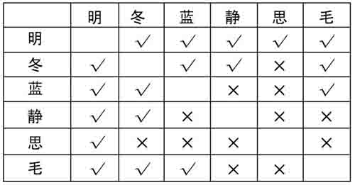
193 陈老师教语文、英语，李老师教数学、美术，王老师教体育、音乐。
194 张老师：上海，教数学；李老师：广州，教外语；刘老师：北京，教语文。
195 题目中的关键是每队名次只有一个人猜对，而每人都猜对了一个队的名次。建立一个表格如下。
从表格中不难发现只有C一人猜了红队是第一名，所以这个结论是正确的，那么白队第五名错了，而紫队第五名对，黄队第二名错；又因为紫队已经第五名，所以紫队第二名错，黄队第三名对，同样道理推下去红队第一、蓝队第二，这样五队的名次依次是红、蓝、黄、白、紫。
在推理过程中，实际依据了基本逻辑规律—同一律和矛盾律，即一个运动队只能穿单一色服装，穿红色的就不可能穿其他颜色的。解决本题的关键是要求我们充分利用已知条件找到突破口。采用的方法是排除法。
196 因为所给信息较多，解决这个问题可以用列表法，并规定表中凡是姓与身份对应的话就画√；若不对应，就画×。
由（1）可知李姓旅客北京一栏应画√，同行同列画×。由（2）、（3）、（5）可知，教师旅客来自广州，而王不是教师，所以在第二行画√，因为老师普通话是要经过测试的，老师不可能有口吃的毛病，王在上海，由（4）知道技术员姓王，由（6）知道姓张的是科学家，姓李的是科学杂志编辑。
197 暗中拿两只袜子，可能是一黑一白。拿三只袜子，第三只袜子非黑即白，这样就可以保证最少有两只袜子颜色相同了。
198 先把牛奶倒满甲、乙两只杯子，把可可倒满丙杯；把丙杯里的可可倒入牛奶瓶里，再将可可倒满丙杯；把甲杯里的牛奶倒入可可瓶里，这时候两个瓶里都是混合饮料了。然后将一个瓶的混合饮料倒满另一个瓶，不满的瓶正好还可装剩下的一杯牛奶和一杯可可。
199 把两个杯子都倒满，然后将水壶里的水倒掉，接着将300毫升杯子内的水全部倒回水壶，把大杯子的水往小杯子倒300毫升，并把这300毫升水倒回壶中，再把大杯子剩下的200毫升水倒往小杯子，把壶里的水注满大杯子（500毫升），这样，壶里只剩100毫升。再把大杯子的水注满小杯子（只能倒出100毫升），然后把小杯子里的水倒掉，再从大杯子往小杯子倒300毫升，大杯子里剩下100毫升，再把小杯子里的水倒掉，最后把水壶里剩的100毫升水倒入小杯子。这样在每个杯子里都恰好有100毫升的水了。
200 将袋子编号：1、2、3、4、5、6、7、8、9、10。依次从中取：1、2、3、4、5、6、7、8、9、10个金币，共计55枚，然后对55枚金币称重。正常情况下，取出的金币总重应该为550克。但由于其中混有11克的不合格金币，所以总重应该超过550克。因为不合格金币重量多1克，所以超过的部分的重量就说明了这样一个事实：超了550克多少，就说明55枚金币中有多少枚不合格金币，而我们取的金币数量就是口袋的编号，所以立即可以知道是哪个口袋中的金币超重，是不合格的。
201
202 由（1）、（2）、（4）得：乙不会英语，甲会日语但不会法语，丁不会日语。假设甲还会英语，由（1）知甲、丙没有共同语言，得丙会汉语和法语，而乙与甲、乙与丙有共同语言，且乙又不能既懂法语又懂日语，得乙会汉语和日语，由（3）得丁会英语、法语，与题中已知条件“只有一种语言三人都会”有矛盾。假设甲还会汉语，由（1）知甲、丙没有共同语言，得丙会英语、法语，而乙与丙、乙与甲有共同语言，只能是乙会汉语、法语，由（3）知丁不会法语，得丁会汉语、英语，这样甲、丁也能相互交谈。所以甲会汉语、日语，乙会汉语、法语，丙会英语、法语，丁会汉语、英语。
203 需要六次。一牛一虎过河，一牛返；二虎过河，一虎返；二牛过河，一牛一虎返；二牛过河，一虎返；二虎过河，一虎返；二虎过河。
204 答案很简单，只要问：“你结婚了吗？”无论是谁回答问题，他知道答案“是”意味着阿米丽雅结婚了而蕾拉没有结婚，而“不是”则意味着雷拉结婚了而阿米丽雅没有结婚。高尚的阿米丽雅会告诉他实话—“是”表示她结婚了而“不是”表示她没有结婚，而邪恶的蕾拉会用“不是”表示她结婚了，而“是”表示她没有结婚—就是说阿米丽雅结婚了。
205 A、B、C代表狼妈妈，a、b、c代表小狼。可以按如下方式渡河：ab过河，a回对岸。ac过河，a回对岸。（此时bc已过河）BC过河，Bb回去。Aa过河，Cc回去。（此时过河的为Aa）BC过河，a回去。（三只狼妈妈已过河，问题解决）a再来回四次，接另外两只小狼过河即可。
206 第一次，农夫先把鹅带过河，将鹅留在对岸，农夫独自返回；第二次，把狗带过河，将狗留在对岸，把鹅带回；第三次，把鹅留下，把白菜送到对岸，农夫独自返回；第四次，把鹅送到对岸。这样，农夫就巧妙地把狗、鹅和白菜都带过河了。
207 要往返渡六次：
第一次：两个孩子乘船到对岸，由一个孩子把船划回侦察兵所在地方（另一个孩子留在对岸）。
第二次：把船划过来的孩子留在岸上，第一名侦察兵划小船到对岸登陆，再由对岸的孩子把船划回来。
第三次：两个孩子乘船过河，其中之一把船划回来。
第四次：第二名侦察兵划船过河，再由对岸的小孩把船划回来。
第五次：同第三次。
第六次：第三名侦察兵过河。小孩把船划回来。于是，两个孩子又可继续在河上划船玩了，而三位侦察兵也都渡到河的对岸了。
208 摆渡者需要往返九次。按照年龄的大小顺序，把五个孩子设为A、B、C、D、E，河的两岸分别设为近岸和远岸，从而可以按照下表顺序来渡河。每个孩子单向往返的次数都是三次。
209 用这条救生艇最多可以营救13人，必须采取其他营救措施。到达岛上要4分钟的话，来回就要花8分钟。先让5个人乘船上岛，因为必须有一个人要把救生艇划回来，所以只有4个人到达岛上避难（花8分钟，4人获救）。然后再载5个人到岛上，1个人再驾船回来（16分钟，8人获救），当船再载5个人离开后，就没有时间再回来接人了。当救生艇到达岛上时，那艘轮船已经沉了。所以如果只用这条救生艇，最多能让13人安全脱险，必须采取其他营救措施。
210 先让1分钟、2分钟过桥，耗时2分钟；让1分钟带回手电，耗时1分钟；5分钟和8分钟过桥，耗时8分钟；让2分钟带回手电，耗时2分钟；1分钟和2分钟过桥，耗时2分钟。总共15分钟（最少）。
211 假设现在有12ml的冰，当冰融化后，变成水，体积减少，也就是只剩下11ml的水。当这11ml的水再结成冰时，则又会变成12ml的冰，对于水而言，正好增加了。
212 根据（1）和（2），李四第一次去健身俱乐部的日子必定是以下二者之一：
①张三第一次去健身俱乐部那天的第二天。
②张三第一次去健身俱乐部那天前六天。
如果①是实际情况，那么根据（1）和（2），张三和李四第二次去健身俱乐部便是在同一天，而且在20天后又是同一天去健身俱乐部。根据（3），他们再次都去健身俱乐部的那天必须是在二月份。可是，张三和李四第一次去健身俱乐部的日子最晚也只能分别是一月份的第六天和第七天；在这种情况下，他们在一月份必定有两次是同一天去健身俱乐部：1月11日和1月31日。因此①不是实际情况，而②是实际情况。在情况②下，一月份的第一个星期二不能迟于1月1日，否则随后的那个星期一将是一月份的第二个星期一。因此，李四是1月1日开始去健身俱乐部的，而张三是1月7日开始去的。于是根据（1）和（2），他二人在一月份去健身俱乐部的日期分别为：李四：1日，5日，9日，13日，17日，21日，25日，29日；张三：7日，12日，17日，22日，27日。因此，根据（3），张三和李四相遇于1月17日。
213 先装满13斤的容器，从中倒满5斤的容器后余下即为8斤，将它倒入11斤的容器里，而把5斤容器中的油倒回大容器；再从大容器里取油装满13斤的容器，倒出5斤后剩下8斤；5斤容器中的油倒回大容器，则大容器中的油也是8斤。
214 7。最后一行是同列上两行中数的平均数。
215 先让A分出他认为是四分之一的一份酒，如果把这一份分给他，他会满意。如果B、C、D中有人认为A的这一份酒多于四分之一，他尽可以把它减掉一点。减少后，如果A没意见，仍可以拿这一份。于是问题变成三个人分酒。重复上述过程，又将有人拿走一份。再下去由两个人来分酒。两个人的分法题目中已经告诉我们了，不必重复。这样，酒就分完了。
216 牛奶要翻倒七次，每次情况如下表所示：
217 为了保证取出一双同样颜色的袜子，至少要从抽屉里摸出三只袜子。为了保证取出两只不同颜色的袜子，从抽屉里摸出的袜子的数量，至少要比抽屉中某种颜色的袜子的数量多一只。由条件，这样取出的袜子的数量是三只，因此，抽屉中某种颜色的袜子的数量是两只。综上所述，抽屉中袜子的总数是四只。
218 把十瓶药品编上1至10的号码。从第一瓶中取出一粒，从第二瓶中取出两粒，从第三瓶中取出三粒，依此类推，直至从第十瓶中取出十粒。这55粒药丸的规定重量应该是5500毫克，如果总重量超过10毫克，则其中有一粒是超重的，那么就可以断定第一瓶是不合格的，如果总重量超过20毫克，则其中有两粒超重，可以断定第二瓶是不合格的。其余的可以依此类推。所以只要称一次就可以找出那瓶不合格的药品来。
219 设四个球分别为1、2、3、4，比较1和2，再用其中一个与3或4比较。（称法不唯一，合理即可）
220 第一次用天平把140公斤分成两个70公斤；第二次把其中一个70公斤分成两个35公斤；第三次把其中一个35公斤分成15公斤和20公斤（利用两个砝码，使天平一边是7公斤的砝码加上15公斤的盐共22公斤，另一边是2公斤的砝码和20公斤的盐共22公斤）。然后把未分的70公斤盐和最后一次分出的20公斤盐加在一起就是90公斤，剩余的盐全加在一起是50公斤。
221 A。这叠纸的厚度将达到3355.4432米，有一座山那么高。
222 把圆里面的正方形旋转45°后再仔细观察一下，小正方形的面积正好是大正方形的面积的一半，故小正方形的面积是25平方厘米。
第六章 实战篇
223 如果你这样算，那就错了。因为，琼斯夫人并不要求必须得到两粒红色的糖或者两粒白色的糖，她只要求两粒同色的糖，即使先取到两粒不同色的糖，第三粒必定与前两粒中的一粒同色。所以她最多只需要花3元钱。
224 并非如此。两人猜拳的排列组合有9种（3×3），所以有三分之一的机会是平局。三人猜拳要复杂一些，其排列组合有27种（3×3×3），平局的情况如下：
（1）石头、石头、石头；
（2）石头、石头、布；
（3）石头、石头、剪子；
（4）剪子、剪子、剪子；
（5）剪子、剪子、布；
（6）剪子、剪子、石头；
（7）布、布、布；
（8）布、布、石头；
（9）布、布、剪子。
由此可见，9种情况下出现平局，同样占三分之一，和两人猜拳平局的概率一样，但所需要的时间明显要长得多。
225 根据栗子分配的过程我们得知，三个女孩子的年龄之比是9∶12∶14。因而，最小的女孩可得198粒，中间的可得264粒，最大的可得308粒栗子。至于女孩子们的年龄，那是不能单值地确定的。
226 吉姆打这个赌是不太明智的。他的推理并不对。为了弄清三枚硬币落地时情况完全相同或不完全相同的可能性，我们首先列出三枚硬币落地时的所有可能的情况。总共有八种：正正正、正正反、正反正、正反反、反正正、反正反、反反正、反反反。每种情况出现的可能性都与其他情况相同。注意，只有两种情况是三枚硬币情况完全相同，这就意味着，三枚硬币完全相同的可能性是四分之一；不完全相同的可能性有六种，即四分之三。换句话说，从长远的观点看，乔每扔四次，就会赢三次。如果他们反复打这个赌，乔就有相当可观的赢利。
227 争取后取。在对方取出一枚或相邻的两枚象棋后，这个环就有了缺口。这时，如果余下是单数枚象棋，你就取出正中的一枚；如果余下是偶数枚象棋，你就取出正中的两枚，使留下的象棋成为对称的两列。以后，对方在一列中取出一枚或相邻的两枚象棋时，你就在另一列对称的位置上取出数量相同的象棋。这样继续下去，就一定能获胜。
228 这其实是一个骗人的把戏。通过图可以看到：由圆圈上的任何一个数字或者左转或者右转，到2元钱位置的步数恰好是这个数字（包含起点）。因此，摸到的扑克数字之和无论是多少，或者左转或者右转必定有一个可能转到2元钱位置。即使转不到2元钱，也只能转到奇数位置，绝不会转到偶数位置，因为如果是奇数，从这个数字开始转，相当于增加了“偶数”，奇数＋偶数＝奇数；如果是偶数，从这个数字开始转，相当于增加了“奇数”，偶数+奇数=奇数。我们仔细观察就会发现，所有贵重的奖品都在偶数字前，而奇数字前只有梳子、小尺子等微不足道的小物品。由于无论怎么转也不会转到偶数字，也就不可能得贵重奖品了。对于小摊贩来说，游客花2元钱与得到小物品的可能性都是一样的，都是二分之一，所以相当于小摊贩将每件小物品用2元钱的价格卖出去。
229 因为每过一道门都被看门人拿去当时苹果数目的一半再加一个，又知道走出第七道门离开果园时，只剩下一个苹果，所以未出第七道门时的苹果个数是（1＋1）×2=4。同理继续往前倒推，未出第六道门时的苹果个数是（4＋1）×2=10。未出第五道门时的苹果个数是（10＋1）×2=22。未出第四道门时的苹果个数是（22＋1）×2=46。未出第三道门时的苹果个数是（46＋1）×2=94。未出第二道门时的苹果个数是（94＋1）×2=190。未出第一道门时的苹果个数是（190＋1）×2=382。这样就得到，这个人在果园一共采了382个苹果。
230 可先把三块牛排编号为1、2、3。然后，第一步：煎1号正面，2号正面（用时5分钟）；第二步：煎1号反面，3号正面（用时5分钟），最后煎2号反面，3号反面（用时5分钟），这样花的时间加起来就只有15分钟。
231 当狐狸掉进陷阱时，它跳过的路程的米数最短应是和的最小公倍数：。当黄鼠狼掉进陷阱时，它跳过的路程的米数最短应是和的最小公倍数：。，所以黄鼠狼先掉进陷阱。这时黄鼠狼共跳了÷＝9次。这时狐狸也跳了9次，进而可以求出狐狸跳的路程。4.5×9＝40.5米，即黄鼠狼先掉入陷阱，这时狐狸跳了40.5米。
232 如果围绕原要入账的300元“虚数字”，那就无法算清了，也就是说，无法找回那“不见”的10元。事实是：三人实际付出270元（从收款员手上各人退得10元），也就是说，入现金账的是250元，进私人腰包是20元，合起来恰好是270元，而按最初的300元去计算是没有意义的。
233 共有三种。边长为7厘米的正方形一种：7＝1＋6＝2＋5＝3＋4；边长为8厘米的正方形一种：8＝1＋7＝2＋6＝3＋5；边长为9厘米的正方形一种：9＝1＋8＝2＋7＝3＋6＝4＋5。
234 若我们是在停着的公交车厢中看对面开过来的车，那么乙的说法是对的，可现在的车是在行驶的，所以如果我们的车从与第一辆对开的车相遇到与第二辆对开的车相遇相隔10分钟的话，那么第二辆对开的公交车要到达我们与第一辆对开公交车相遇的地方还有10分钟路程，那就是说两辆对面开来的公交车之间的时间间隔是20分钟。因此一小时中开到市中心的公交车不是6辆而是3辆。
235 可设定日租金为360元。虽然比客满价高出200元，并因此失去30位客人，但余下的50位客人还是能给我们带来360×50＝18000元的收入；扣除50间房的支出40×50＝2000元，每日净赚16000元，而客满时净利润只有160×80－40×80＝9600元。
236 一样多。第二次取出的那勺水，因为它和第一勺体积相等，都设为a。假设这勺混合液中白酒所占体积为b，那么倒入第一杯白酒的水的体积为a－b。第一次倒入水的白酒为a，第二次取出b体积白酒，则水里还剩a－b体积白酒。所以白酒杯里的水和水杯里的白酒一样多。
237 后摘的可以获胜。首先，如果先摘取者摘了一片花瓣，那么，后摘取者在花瓣的另一边摘去两片花瓣；如果先摘取者摘了两片花瓣，那么，后摘取者在花瓣的另一边摘去一片花瓣。这时剩下了十片花瓣，而且，后摘取者保证在第一次摘取后，剩下的十片花瓣分成两组，并且这两组被上轮摘取的三个花瓣的空缺隔开。在以后的摘取中，如果先摘者摘取一片，后摘者也摘取一片；如果先摘者摘取两片，后摘者也摘取两片，并且摘取的花瓣是另一组中对应的位置，这样下去，后摘者一定可以摘到最后的花瓣。
238 首先求出路上用去的时间，因为从家出发和回到家时，钟的时间是知道的，虽然它不准，但是用回到家的时间减出发时的时间就得到在路上与在图书馆一共花去的时间，然后再减去在图书馆花掉的一个半小时就得到路上花去的时间，除以2就得到从图书馆到家需要的时间。由于图书馆的8：50是准确时间，用这个时间加上看书的一个半小时，再加上路上用去的时间就得到了回到家时的准确时间，按这个时间来调整闹钟即可。7：10到11：50有4小时40分，减去在图书馆用去的一个半小时为3小时10分，则从图书馆到家的时间为3小时10分的一半，为1小时35分，所以到家时的准确时间是11：55，所以到家时应该把钟调到11：55。
239 妻子分到，儿子分到，女儿分到。
总而言之，妻子和儿子的比例是1∶2，和女儿的比例为2∶1，除此之外别无他法，那么妻子、儿子、女儿的总比例为2∶4∶1。
240 邻居牵出自己的一头牛，这样一共有十八头牛。二分之一，得九头；三分之一，得六头；九分之一，得两头。正好分去十七头，最后仍剩下这位邻居自己的那头牛。
241 八十四岁。
242 假设实际上去了个小朋友。则+1为2、3、4、5、6、7、8、9、10的公倍数。即：＝2520，那么最少为2519人。
243 这道题选自十九世纪美国数学游戏大师山姆•洛伊德的著作《洛伊德数学趣题》，看似简单，实则含义丰富。为了解决这类问题，首先应算出人与猪在直线上向前行进时，人要走多少路才能追上猪。这一数字还应加上人与猪在直线上相向而行时，人把猪抓住的行走距离。把结果除以2，这就是你要求的追猪的人所走过的路程。
对本题来说，猪在250米外，而人与猪的速度之比为4∶3，所以如果人同猪都在一条直线上向前方行进，则人走了1000米之后就可追上猪；如果人同猪相向而行，那么人要抓住猪，走的路将是250米的，即米。把以上两个距离数相加，再除以2，结果是米，这就是此人走过的路程。由于猪的速度为人速的，所以猪走的路程是人的，也就是米。
244 由于医生和护士的总数是16名，从（1）和（4）得知：护士至少有9名，男医生最多是6名。于是，按照（2），男护士必定不到6名。根据（3），女护士少于男护士，所以男护士必定超过4名。根据上述推断，男护士多于4名少于6名，故男护士必定正好是5名。于是，护士必定不超过9名，从而正好是9名，包括5名男性和4名女性，于是男医生则不能少于6名。这样，必定只有一名女医生，使得总数为16名。如果把一名男医生排除在外，则与（2）矛盾；把一名男护士排除在外，则与（3）矛盾；把一名女医生排除在外，则与（4）矛盾；把一名女护士排除，则与任何一条都不矛盾。因此，说话的人是一位女护士。
245 贝尔、查理、迪克各自拿出10美元给阿伊库就可解决问题了。这样的话只动用了30美元。最笨的办法就是用一百美元来一一付清。贝尔必须拿出10美元的欠额，查理和迪克也一样；而阿伊库则要收回借出的30美元。
246 如果你从1美分开始不断地加倍，最初，数量增长得还算缓慢，但随后越来越快，不久便大幅度地猛增。似乎难以令人相信，如果这位上了他儿子当的爸爸要信守协议，他给杰克的钱将超过一千万美元！
通过列表，我们可以发现，在5月30日那一天，爸爸付的钱是5368709.12美元，5月31日，即5月的最后一天，爸爸给的钱是10737418.24美元，已经超过1000万美元了！而爸爸总共付出的钱是这个数字的两倍再减去一美分，即21474836.47美元！
247 五张1美元的、五十张2美元的和十九张5美元的。
248 射击15发的得分分别为25、15、15、15、9、5、5、5、3、3、1、1、1、1、1。共得105分，每人得35分。三人得分情况只能是：
（1） 15、15、3、1、1。
（2） 15、9、5、5、1。
（3） 25、5、3、1、1。
甲有二发共得18分，甲得分（1），乙有一发得3分，乙得分（3），25在（3），所以击中靶心的是乙。
249 丁组。
250 在机器人右边5米处停放了一辆车，该车虽然没有在行驶当中，但足以使机器人望而却步。因此，程序中“25米内是否有车辆”应该改为“25米内是否有正在行驶的车辆”。
251 前五次射击的平均环数小于（9.0＋8.4＋8.1＋9.3）÷4＝8.7（环），前九次的总环数至多为8.7×9－0.1＝78.2（环），所以第十次射击至少得8.8×10＋0.1－78.2＝9.9（环）。
252 根据“七路纵队，后排少了两人”这一点，人数可能是5、12、19、26、33、40……等；根据“五路纵队，又多出1个”这一点，人数可能是6、11、16、21、26、31……这两行一对照，你会发现26、61、96、131……等数能同时符合这两点要求。根据“三路纵队，末尾刚好平齐”这一点，要求人数是3、6、9、12、15、18……显然，96是符合这三点要求最小的数，就是说代表队至少有96人。
253 十枚硬币可按下图放置，这样就能得出十六个偶数行了。
254 长10米，宽5米，面积为50平方米。
255
256 将花朵图案和正方形相比较。从正方形出发，在每一边的中部向内挖去半个圆，每个角上向外拼接四分之三个圆，就得到花朵图案。总起来看，四边四角，共挖去两个整圆，拼接三个整圆，净增加一个整圆的面积。圆的半径是1厘米，正方形的边长是4厘米。取圆周率为3.14，得到花朵图案的面积是19.14平方厘米。
257 首先，BC往后退（向右），A进入河湾。然后DEF沿着河道前进，与A擦身而过后，A从河湾出来，继续前进（向左）。接下来，DEF再回到原来位置，让B如A那般通过，再让C也按同样的方式过去，最后，双方继续航行。
258
259 如图，将第二根绳子一端垂直靠紧第一根绳子的中间处，将第三根绳子垂直靠紧第二条的四分之一处，同时点燃第一根的两端和第二根、第三根的另一端。
260 在道路5与街道4的交叉口。方法是：在道路上处于中间位置的住处上，画上一条线，然后在街道处于中间位置的住处上，同样也画一条线，其交叉点就是你要找的位置。
261
262 由概率理论应该换，若不换的话，得到车的概率是三分之一，若换的话，得到车的概率是三分之二。
263 船长让船员们排成一个圈的一列队，从数字1开始，每数到第九的船员被扔下水。多格尼亚船员的数字是：1、2、3、4、10、11、13、14、15、17、20、21、25、28、29。不幸的卡塔尼亚船员所站的位置则是：5、6、7、8、9、12、16、18、19、22、23、24、26、27、30。
264 如图，只要把ABC面放成水平，倒入酒，即三棱锥D-ACB的容量为10/6两，倒2次，即为10两的1/3。再进行如上操作，便可把一斤酒平均分成3份。
265 站成五角星的形状，5个顶点和5个交叉点各站一个人。
266 1号分到最多。可以采用反推法来解题。
先分析若是轮到5号、4号、3号、2号会是何种情形，可知：轮到2号时他只需给4号1个宝石即可通过方案。即3号、5号得到的宝石数为0。好了，下面来看第一个提出方案1号：1号要想通过方案，则需要在2、3、4、5中争取到两个人。从上述看出，既然轮到2号的局势已定，那他早已知道后面的海盗心里想什么了。也就是简单的说，他们清楚认识到，轮到2号时，3号和5号得不到宝石！那么这样的话，1号给3、5每人1颗宝石即可以获得他们两个人的同意票。最终结局的状态是：
1号得到98颗宝石，活，同意；
2号得到0颗宝石，活，不同意；
3号得到1颗宝石，活，同意；
4号得到0颗宝石，活，不同意；
5号得到1颗宝石，活，同意；
即：98、0、1、0、1（达到1号利益最大化）。
267 这可能吗？你可以试试看，把小金鱼放进去，水同样会溢出来，而你是不是在想类似“因为金鱼有鳞片，或者金鱼把水喝到肚子里去了”等答案呢？
这是曾两次获得诺贝尔奖的居里夫人小时候做的一道题。本题培养我们的创造性思维，不要迷信某种解题技巧。
268 从一楼到四楼，每上一层楼需时为4/3分钟，上到8楼需要（4÷3）×7=28/3分钟。
269 韩国队失2球，不是全失于日本队。如果是的话，那么日本队所进的4球中有2球是胜中国队的，这样日本与中国的结果就是2∶2平局，与条件矛盾。韩国队所失2球，也不是全失于中国队。如果是的话，那么日本与中国打成4∶0，日本所失4球全是韩国所进，从而推出韩国与中国2∶2，又与条件矛盾。所以韩国所失2球，是日本、中国两队各进1球所致。日本队共进4球，1球是与韩国队比赛时进的，那么另3球是与中国队比赛时进的。同理，中国队另1球也是与日本队比赛时进的。因此，日本队与中国队的比分是3∶1。中国队失6球，其中3球失于日本队，那么另3球是失于韩国队。所以韩国与中国的比分也是3∶1。日本队失4球，其中1球失于中国，所以韩国与日本的比分也是3∶1。
270 我们先以数目较少的金片为例，动手验证一下：一个金片，只需1步，直接放入第三根棒；两个金片，3步完成：先把小金片放入第二根棒，再把大金片放入第三根棒，再把小金片转移到第三根棒。三个金片，第一片就先移到第三根，借助前两根棒，把最大的一片放到最上面；然后再把最小金片从第三根棒上移走，清空第三根棒，把最大的一片放在最底下，然后按规定摆放。实践证明，最少7步完成。这时，我们可以总结一下规律，就可以发现：如果金片是单数，第一片就先移到第三根，如果是双数，就先移到第二根。四个金片，情况就比较复杂了：要把最大的金片移到第三根棒，其他的三个金片就必须移到中间一根棒。前面三个金片移到第二根棒需要7步，把最大的移到第三根棒是第8步，最后把三个金片从第二根棒移到第三根棒，又是需要7步，刚好7+1+7=15步。这时，我们就可以归纳总结一下了：当金片是时，需要多少步？通过以上分析，我们可以清楚地列出了这么一个表格：
| 金片数 | 1 | 2 | 3 | 4 |
| 所需要的少数 | 1 | 3 | 7 | 15 |
有什么规律呢？
仔细观察，就不难发现：如果有个金片，那完成的步数就是2－1。如果金片增加到五个，完成的次数果然是25－1，即31次。
根据“2－1”这个公式，传说的谜底就藏在264－1的算式里。但这个数究竟是几？恐怕只有通过现代的计算机才能准确算出，答案是：18446744073709551615。哇，数都数不清！我们可以根据这个答案推算一下需要多少次：假设搬一个金片要用一秒钟，18446744073709551615÷3600＝5124095576030431小时，再除以24等于213503982334601天，除以365等于584942417355年，约等于5849亿年，剩下的零头，也是天文数字。太阳的寿命是100亿年，当太阳走到生命的终点时，地球上的一切生命也不可能存在了，那时候或许就是所谓的“世界末日”。但现在我们可以知道了，即使真的到了“世界末日”，这个任务也无法完成！难怪这位古印度的数学家要发笑！
271 要看是怎样的桶，如果是桶和水池一样大小，只有一桶水；如果桶只有水池一般大，则有两桶水；若桶有水池的三分之一大，则有三桶水，以此类推。
272 （1）七块小板的面积分别是4、4、2、2、2、1、1。容易看出，用七巧板中两块面积为1的小板可以拼成任何一块面积为2的小板；用其中任何一块面积为2的小板和两块面积为1的小板可以拼成一块面积为4的小板。
（2） 因为图中表现人物头部的是一块正方形小板，面积为2；而每个人物图形都是由一副七巧板拼成的，七块小板面积的总和是16。所以在每个人物图中，头部面积与全身面积的比都是1∶8。
273 如图。
274 在我们生活着的地面上，要按照老国王的遗嘱来划分国土，无论如何是办不到的。不信，你可以试一试。原来，老国王之所以要立下这样一份无法执行的遗嘱，其本意就是要他的儿子们不要分家，大家团结一致，共同治理好王国。
然而，如果老国王和五个儿子生活在几何学中的“莫比乌斯曲面”上，那么按照老国王的遗嘱将国土分成五块却是可以办到的。
什么是莫比乌斯曲面呢？让我们先来做一个模型：如图(1)，先准备好一条长方形的纸带。然后用一只手拿住CD一边，另一只手将AB一边扭转180。，使A点与D点，B点与C点分别对准并将它们粘合，成为图③那样的纸圈。这就是莫比乌斯曲面的模型。（注意：不是将AB边与CD边直接粘合。将A点与C点，B点与D点分别对准粘合成的是图②那样的柱形曲面）
莫比乌斯曲面与柱形曲面不同。柱形曲面有内外两个面；而莫比乌斯曲面只有一个面。这就好比说，放一只蚂蚁在普通的纸带圈上，蚂蚁要想爬遍所有的表面，就必须越过内外两个面的边界，而蚂蚁在这个莫比乌斯曲面上爬行时，就可以不越过边界而直接爬遍所有的表面！你说怪不怪？不仅如此，它还有许多重要而有趣的性质，因而在近代数学、物理等学科的理论研究中有着重要的应用。
如果我们把图（1）所示纸带的正面划分成五个部分并标上数字代表五块国土，如图（1）。然后把1、2、3、4朝纸带的背面延伸过去，并相应标上数字，如图（1）。最后按前面介绍的方法把纸带粘合成莫比乌斯曲面。这样，假如老国王的五个儿子居住在这个单面的莫比乌斯曲面上，他们就能按照老国王的遗嘱将国土分成五块了。
有关莫比乌斯曲面的趣味故事有很多，其中一个是这样的。
一个小偷偷了一位农民的东西，被当场捕获，将小偷送到县衙，县官发现小偷竟然是自己的儿子。他眼珠一转，悄悄地在一张纸条的正面写上：小偷应当放掉；而在纸的反面写了：农民应当关押。县官将纸条交给执事官由他去办理。聪明的执事官不忍心关押农民，就将纸条扭了个弯，用手指将两端捏在一起。然后向大家宣布：根据县太爷的命令，放掉农民，关押小偷。县官听了大怒，责问执事官。执事官将纸条捏在手上给县官看，从“应当”二字读起，确实没错。仔细观看字迹，也没有涂改，县官不知其中的奥妙，只好自认倒霉。
县官知道执事官在纸条上做了手脚，怀恨在心，伺机报复。一日，又拿了一张纸条，要执事官一笔将正反两面涂黑，否则就要将其拘役。执事官不慌不忙地把纸条扭了一下，粘住两端，提笔在纸环上一划，又拆开两端，只见纸条正反面均涂上黑色。县官的毒计又落空了。
现实中可能根本不会发生这样的事情，但这个故事却很好地反映出“莫比乌斯曲面”的特点。